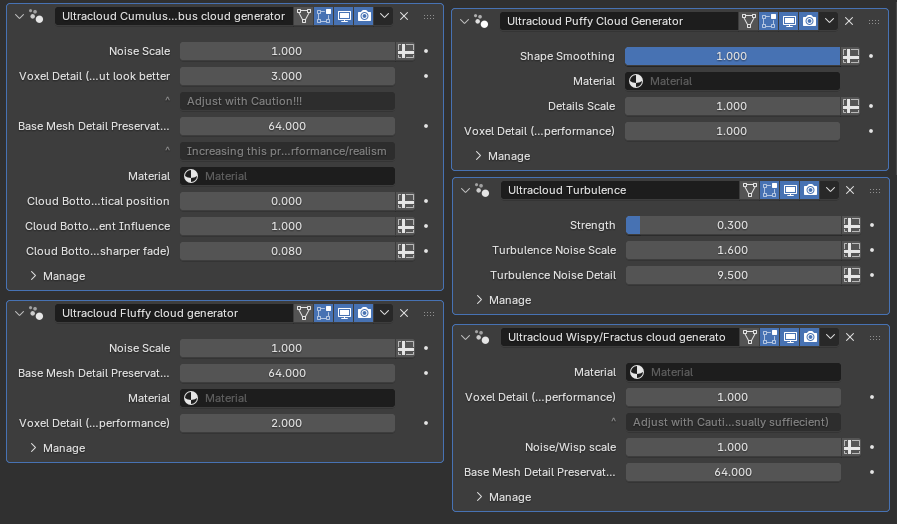

That's not a problem anymore.
As a next-generation cloud creation system for Blender, UltraCloud lets you take a simple base mesh of your choice or generate one from scratch, and then converts it into a photo-realistic cloud. This way, you can art direct your skies while maintaining the ease and speed of procedural generation.
It’s more than a generator. It’s a system. With 6 powerful modifiers and an incredibly realistic shader, you can easily create cloudscapes at a whole new level.
Whether you need a towering cumulonimbus stormfront or a cloudy Suzzane, UltraCloud gives you the flexibility to follow your imagination wherever it leads.
What about when you don’t need fine-tuned control, and just want a drag-and-drop solution? With UltraCloud, you have access to a set of quality VDBs, whether you just need quick results or want something to get you started.
You will also have access to a set of Cloud Planes, which are 2D planes that have a shader applied to make them look like realistic, wispy clouds. This is an easy way to add detail without heavy volumetrics.
A next-generation cloud creation system for Blender, UltraCloud takes a base mesh and converts it into a photo-realistic cloud so you can art direct your skies with the ease and speed of procedural generation.
